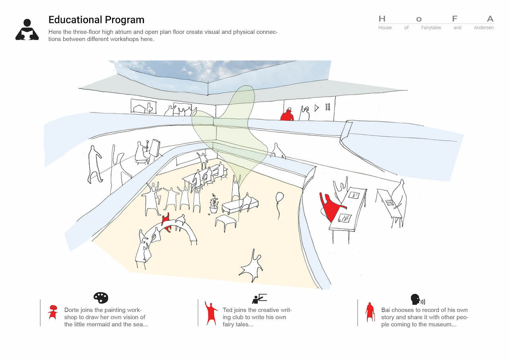
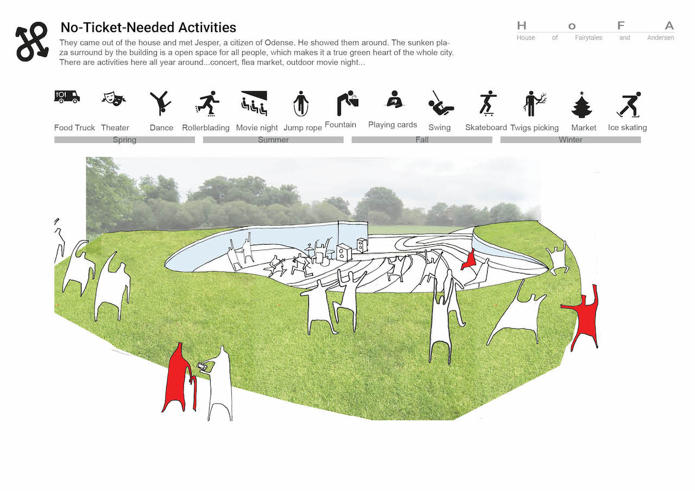
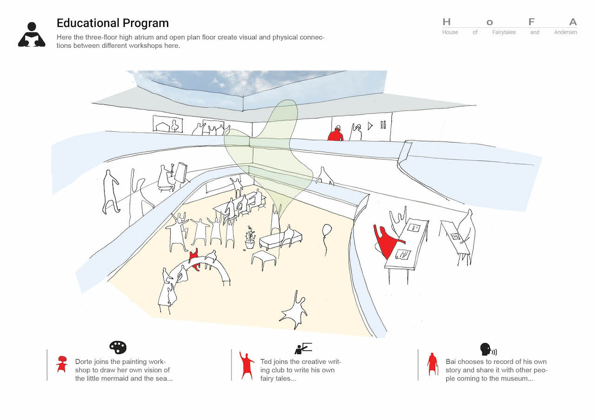
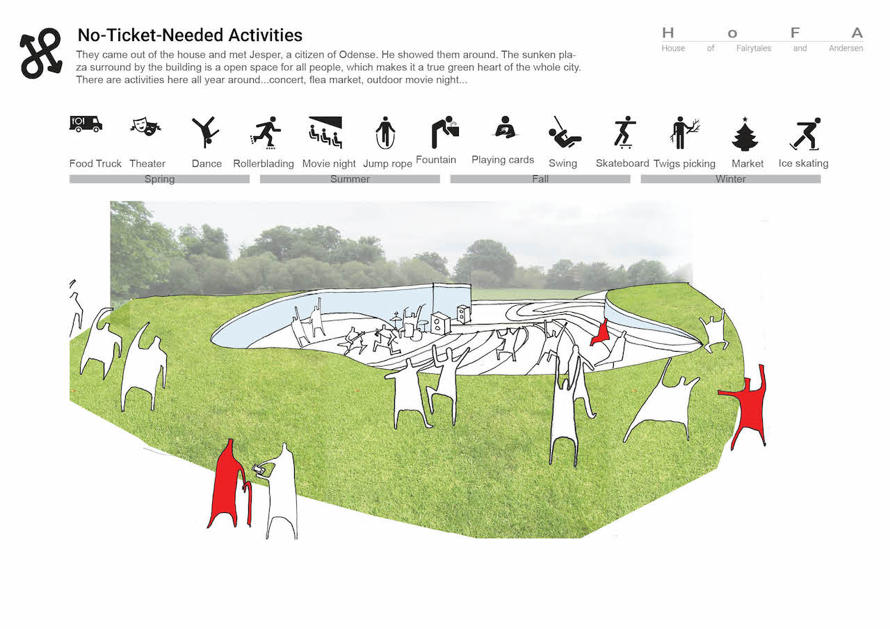

HUG
2013
'HUG' is a proposal for House of Fairytale and Anderson (HoFA) Competition in 2013. The challenge of this competition is to design a house of fairytales and garden on the site where Hans Christian Andersen was born and they will become an attraction of international standing. The Concept of HUG is to welcome visitors of all age and nationalities to the warm and powerful fairytales worlds inspired by the Danish writer Hans Christian Andersen. Having only 2 weeks part-time to complete the project, our first priority was to scope the project like a fairytale. We started our storytelling by creating 3 personas in different age groups. The entire project ended up like a story about the 3 personas' experience of visiting the future fairytale house.
Info
Time: 11/2013, 2 WEEKS
Tools: Rhinoceros 3D, Adobe Illustrator, Adobe Photoshop, Adobe InDesign
Partner: Wenqian Jiang
Role: Concept Development, Illustration, Story Visualization.
Category
UI/UX
Experience Design
Architecture
Urbanism
 


